Downloading digital documents at an external link
1. Abstract
The platform allows you to download digital documents from a remote address in an external system and save them to the registry for further use in business processes. For example, this may be required for viewing acts, images, or other digital documents, etc.
Currently, the system allows receiving digital documents via an external link with the NO_AUTH authentication type when a request is made to public APIs (for details, see Setting up integration with an external system).
|
For receiving digital files from a remote address, the JUEL function save_digital_document_from_url() was developed. It can be used to simplify the modeling of processes in scripts (for more details, see Using in a business process).
The Digital Document Service (digital-document-service) is responsible for processing digital documents in the Platform.
2. Setting up integration with an external system
In order for a request for receiving external resources to go beyond the Platform cluster, it is necessary to create Service Entry at the registry level — a traffic exit point outside the system.
A Service Entry is created automatically when the registry administrator configures the integration in the Control Plane administrative panel. After applying the changes to the registry configuration and passing the Jenkins-pipeline MASTER-Build-<registry-name>, the connection to the external system will be configured.
|
| For details about settings in the Control Plane console, see the Configuring integrations with external systems in Control Plane page. |
-
Log in to the Control Plane console as a registry administrator.
-
Go to the Registries section and open the required registry.
-
Find the Settings for interaction with other systems section and click + ADD EXTERNAL SYSTEM.
-
In the new window, configure the integration with the external system for further interaction according to the registry regulations.
Configure the interaction using the NO_AUTHauthentication method. Other authentication methods are not available for this scenario.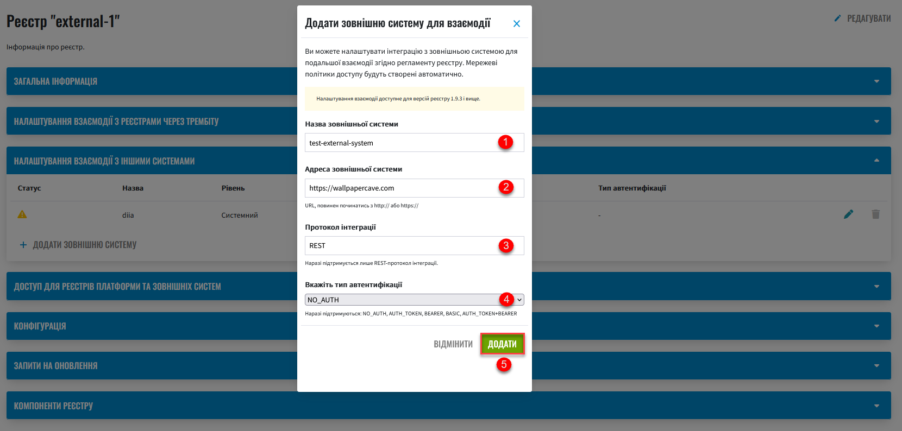
3. Using in a business process
3.1. General information and restrictions
After configuring interaction with an external system in Control Plane, you can model scenarios of receiving digital documents at a remote address and their further use in business processes.
To receive digital files at a remote address, use the JUEL function save_digital_document_from_url (). It can be used when developing Groovy scripts in business processes.
- The function can accept 2 input parameters:
-
-
URL of a digital document
-
File name
It is possible to receive only one document per request to an external source. Both parameters are
String, so a modeler can pass virtually any argument to the function:
Example 1. Function templatesave_digital_document_from_url(String remoteFileUrl, String targetFileName)
-
|
The algorithm of the function is as follows:
After that, For a full list of parameters that can be used in a business process, see the table below.
Response example
|
The maximum file size (
When using the
|
|
Use the ready-made diagram of the business process to learn the details: Copy the contents of the .bpmn file and paste it in the Code tab in the Process Models section of the Regulations administrator portal. |
3.2. Business process modeling
3.2.1. Script for receiving a digital document from an external link
-
Create a Script Task.
-
In the
Namefield, enter the name of the task. For example,Receiving a file from another system. -
In the
Scriptfield, open Script Editor and write a Groovy script for data processing.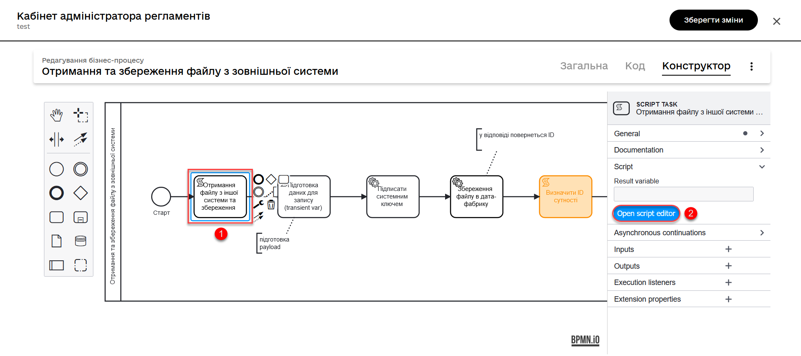
-
Use the
save_digital_document_from_url ()function to retrieve a digital document from an external system.-
Pass both the link function and the file name as input parameters. This can be done, for example, by defining the
urlandfileNameparameters as variables, assigning them appropriate values, and using them in the function.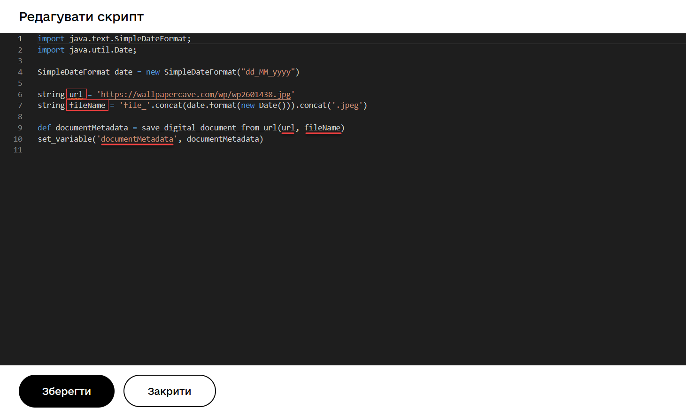
-
Or you can immediately create an object and assign to it the function as a value with the corresponding input parameters.
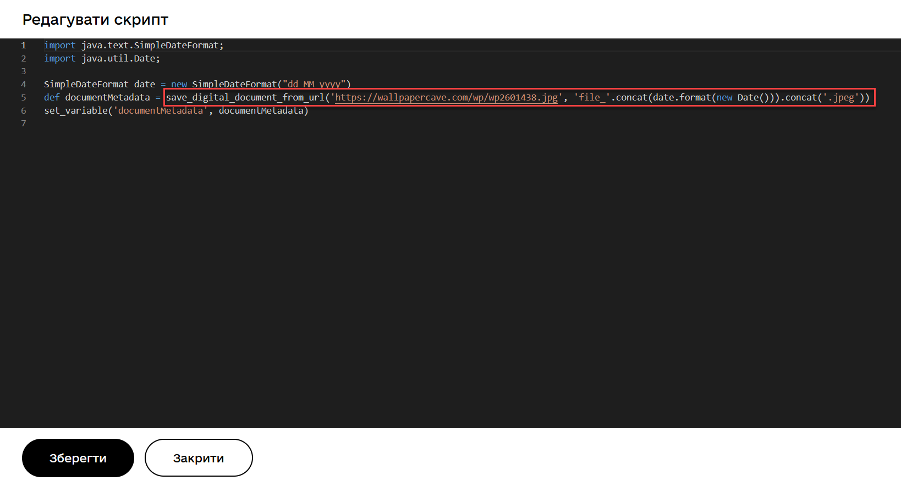
After processing of the received data in the Digital document service, the
idandchecksummetadata of the document stored in the temporary storage of intermediate data are returned to the business process.After saving the digital document to the temporary repository, the developer must define the logic for saving the document in the permanent CEPH repository, because the file will be deleted from the temporary repository after the BP is finished.
The result of the script execution must be saved to the
documentMetadatavariable that will be used later in another script to create an object that stores the metadata of the received document in the permanent CEPH storage.
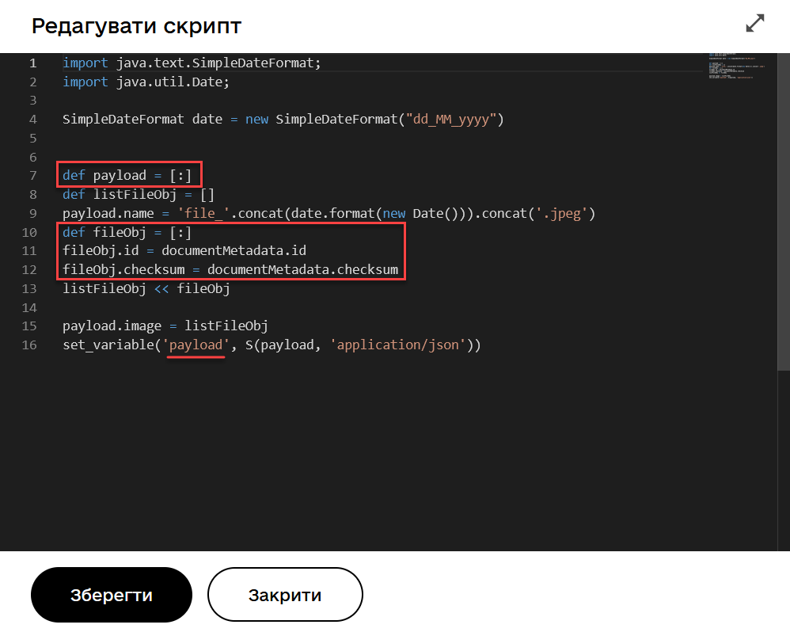 -
3.2.2. User task for outputting a file from the database to the UI form
After saving the object with the metadata of the digital document to the main database, we find the record by its ID and transfer the object as a variable to the UI form of the User portal.
-
Create a User Task.
-
Enter the task name. For example,
View the file from the database in the form. -
Apply the delegate template from the list of available templates — User form.
-
In the
Form keyfield, enter the service name of the form to which you want to transfer data. For examplefile-saved-from-ext-system-view. -
In the
Assigneefield, enter the process initiator token —${initiator}. -
In the
Form data pre-populationfield, enter the data of the object containing a digital document (in our example, that is an image), which will be displayed in the form. For example,${response.value.responseBody}.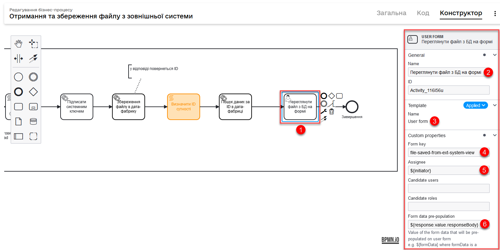
3.3. Modeling of UI forms
The digital document received from an external link can be displayed in the UI form of the business process and downloaded to the local machine for further use.
|
Use the ready-made form to learn the details: Copy the contents of the .json file and paste it in the Code tab in the UI-forms section of the Regulations administrator portal. |
-
Create a UI form for a business process.
-
In Builder, configure the
Text Fieldcomponent to display the filename. -
Next, configure the
Filecomponent for receiving the data (a digital document) from the CEPH repository.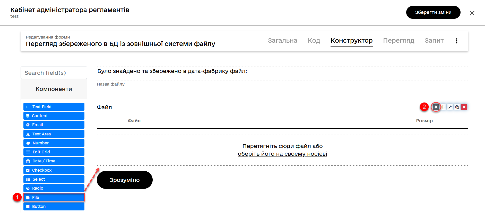
Go to the
APItab, and in theProperty Namefield, enter the keyword to search for a record in the object repository. For exampleimage.The parameter is not hardcoded. You can use any keys provided by your business process logic.
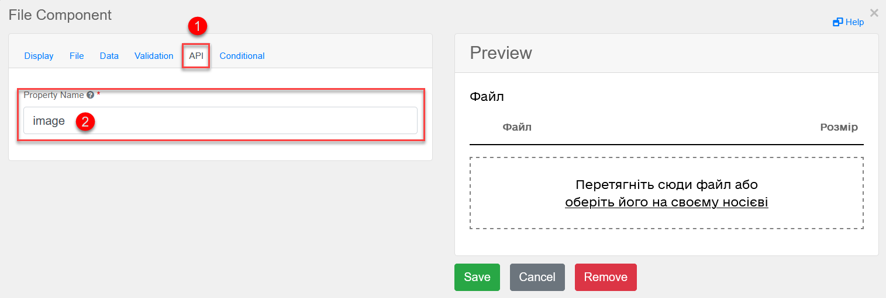
The result returned to the UI form may look like this:
Example 2. Digital document received from CEPH using theimagekeyword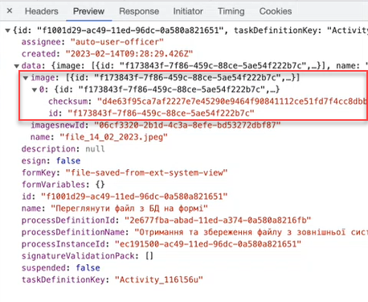
3.4. Usage in the Officer portal
Let’s consider an example of how a user UI form looks like with a displayed digital document received from an object repository.
-
Enter the Officer portal.
-
Run the modeled business process.
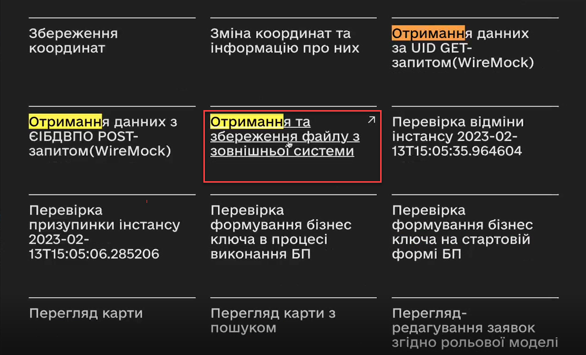
-
Download the received file to your local machine for future use.
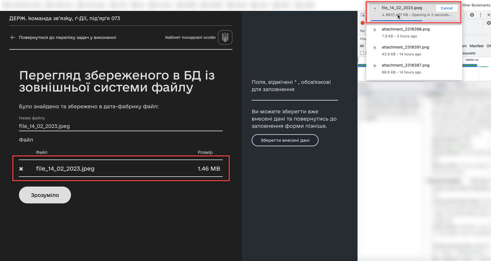